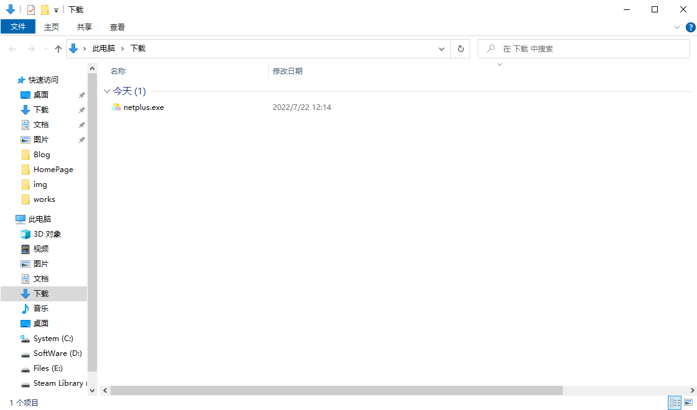
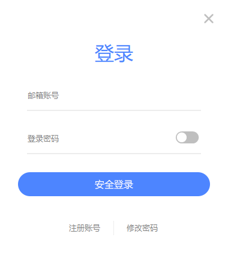
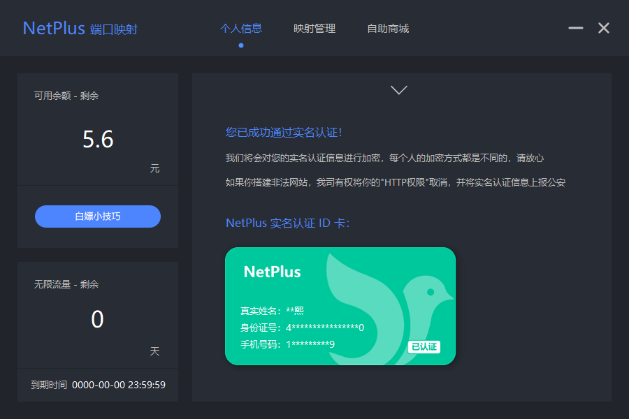
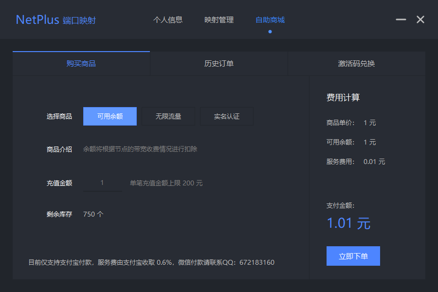
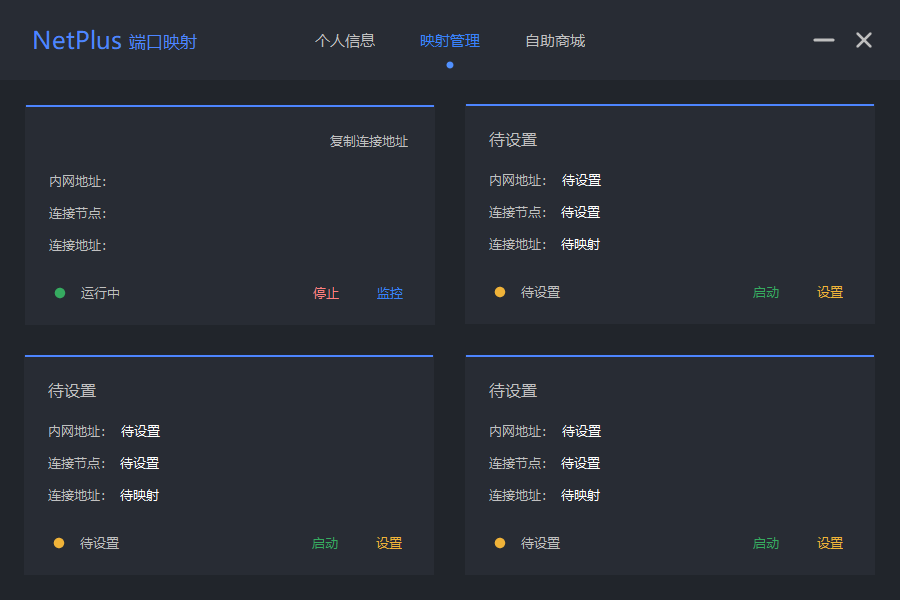
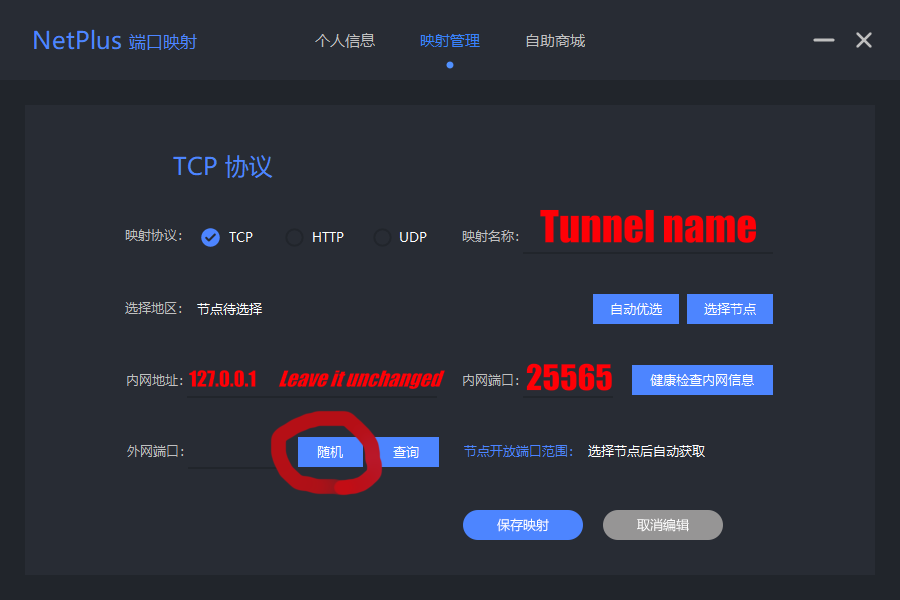

NetPlus Official Website
Homepage of the official website
Software Download (Installation Package ×64)
Customer
Use the tutorial
1. Download and install the software(Some computers may report poison, click more options and run it)
2.Register an account and real-name authentication (real-name authentication requires a partial verification fee due to third-party interface verification,If you do not have an account, you need to click Register Account to register)
New users can get 5.00 yuan for registration, which can be used to purchase traffic in the self-service mall
3.Find the four tunnels in Mapping Management, select one of them (any one of them will do), and click Settings in the lower right corner
4. The main content of this article is the service method of Mi necraftServers, so Java's transport protocol chooses TCP
5.After saving the mapping, select Start Tunnel, click Copy Link Address to Send to Friends to connect across the LAN (see Minecraft-Servers for intranet port details.)